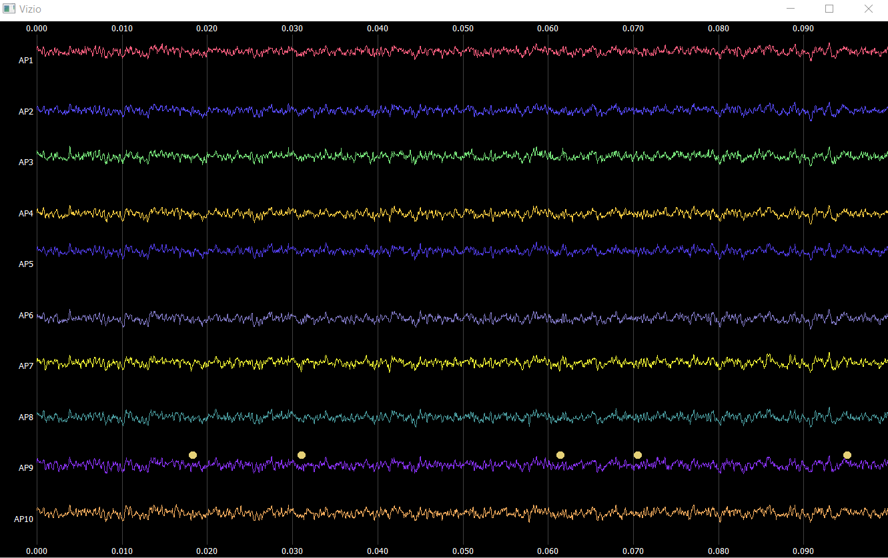
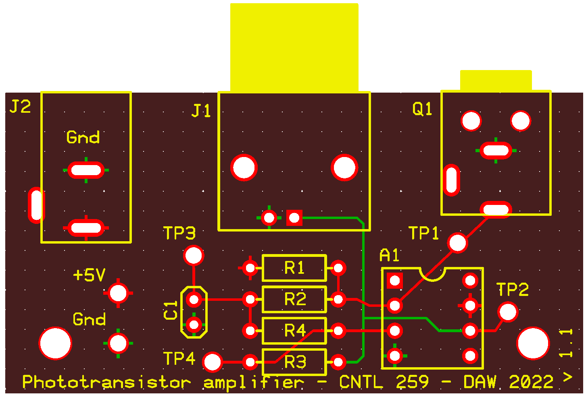

Welcome to the California Institute of Technology Neurotech Lab website. Professor Daniel Wagenaar and students have developed several general-use hardware and software tools over the years, and we believe the community would benefit from have open-sourcing them in-depth tutorials. Topics range from visual neuroscience tools to barcode generation and alignment for neuropixel + NIDAQ experimental rigs.
We are undertaking an crowdsourced search for neurons that respond to magnetic fields; a neural correlate of "magnetosensation". We are actively seeking collaborators to help us search! If you do ephys, calcium imaging, or another physiological recording technique, we would love your help! We will send you the equipment, and you just do your experiments as usual. At the end of your recording session, flip our device on, record for another minute or two, and send us the data!
To participate, please fill out our Participation Form and take a look at our Collaboration Plan. We look forward to hearing from you!
Code for sending unique barcodes to multiple data acquisition systems for later alignment. Barcodes always have exactly ten high and ten low signals, and the duration of the signals, as well as the interval between them, can be easily adjusted.
Furthermore, it also allows for multiplexing stimulus identity signals into the barcode stream, specifically for optogenetics.
Input/output utilities specially designed for aligning barcodes (see above) sent in parallel to a neuropixel PXI chassis and to a NI-DAQ system, even when the sampling rates of these systems are not the same (even by an order of magnitude).
# Create loader object
ldr = openEphysIO.Loader(path, cntlbarcodes=True)
# Convert event times
t_up = ldr.shifttime(times,
deststream="Neuropix-PXI-102.0",
sourcestream="NI-DAQmx-100.0",
sourcebarcode="A2")
Additionally, ephysio includes a nifty spike browser! Written with pyQt, it is snappy, full-featured, and aesthetically pleasing. We hope the community will benefit from this tool.
Design files and gerber files for printing a phototransistor circuit for fast encoding of high/low signals on a screen. This device is particularly useful for precisely aligning visual presentations on a screen with physiological recordings (e.g., electrophysiological recordings)
A series of python utilities, including a handy schmitt trigger for cleanly and efficiently thresholding often noisy signal data!
# Thresholding a signal using the Schmitt trigger function.
up, down = schmitt(
np.array(signal_trace, dtype="float64"),
thr_on=12_000, thr_off=2_500, starttype=0, endtype=0
)